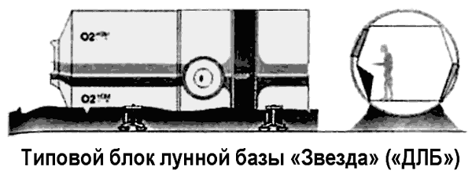

Лунная база «Звезда» по проекту Владимира Бармина
В России идея использования Луны в качестве сырьевого ресурса для земной цивилизации выдвигалась еще в трудах Константина Циолковского. Однако технически конкретные описания проектов лунной базы стали появляться только после 1946 года. Проекты рассматривали различные варианты лунных жилищ: искусственные сооружения, использование естественных полостей, использование защитных свойств лунного вещества, создание замкнутых систем жизнеобеспечения и так далее.
Сергей Королев в публикациях начала 60-х годов наметил этапы изучения Луны, которые своим продолжением предполагали начальные стадии освоения и использования лунных ресурсов. После облета Луны и высадки на ее поверхность Королев считал целесообразным создание постоянно действующей лунной базы: «Организация на Луне постоянной научной станции, а впоследствии и промышленного объекта позволит использовать те нетронутые и еще неизвестные ресурсы этого наиболее близкого к нам небесного тела для науки и народного хозяйства».
В «Заметках по тяжелому межпланетному кораблю и тяжелой орбитальной станции», сделанных в качестве рабочих записей в 1962 году, Королев предполагал использовать Луну и окололунное пространство в системе инфраструктуры земной космической технологии. Первым уровнем подобной инфраструктуры, по мысли Сергея Павловича, должен стать «орбитальный пояс» постоянных спутников, несущих различные функциональные нагрузки в околоземном пространстве: запасные базы-спутники для аппаратов, перед которыми возникнет необходимость в ремонте, регулировании или перезарядке. Базы-спутники должны обладать «всем необходимым для крайнего случая (воздух, влага и питание, энергетика, связь, медикаменты, аппаратура для создания искусственной тяжести и др.)».
Вторым уровнем космической технологической инфраструктуры Королев называл Луну и долговременные спутники на окололунной орбите, предназначенные для обслуживания межпланетных космических комплексов.
Создание долговременного и достаточно крупного спутника-станции Луны выгодно тем, что пролетающим кораблям не надо осуществлять посадку на Луну либо спускать на ее поверхность ракетные зонды, что связано со значительными затратами топлива и другими трудностями. Но непосредственно «на Луне надо иметь, видимо, и капитальную базу для космических целей, а именно: решение задач навигации кораблей (в обоих случаях при очень дальних полетах), снабжение кораблей некоторыми необходимыми материальными средствами, в том числе питанием, средствами жизнеобеспечения, ядерным топливом (включая и рабочее тело) и т. д.».
В том же 1962 году Сергей Королев поручил ГСКБ Спецмаш, которым руководил академик Владимир Павлович Бармин, разработать проект лунной базы.
Рассказывают, будто бы Бармин заявил Королеву, что не сможет проектировать базу, не зная, какой носитель будет использоваться для доставки ее элементов на Луну. И будто бы Королев ответил на это: «Вы спроектируйте базу, а как доставить ее туда, моя забота».
Проектировщики Бармина немедленно приступили к работе.
Она заняла более десяти лет.
В документах ГСКБ Спецмаш проект проходил под обозначением «ДЛБ» («Долговременная лунная база»), в ОКБ-1 его знали под красивым названием «Звезда». В конструкторском бюро Спецмаша изучался самый широкий круг вопросов, связанных с лунной базой: цели базы, принципы строительства, стадии развертывания и состав научного и строительного оборудования. Для решения ряда проблем приходилось привлекать смежников из других организаций.
Предполагалось, что место для базы будет выбрано с использованием автоматических аппаратов. С орбитального спутника Луны будет произведено картографирование участка, затем беспилотная станция возьмет пробы грунта и доставит их на Землю, после этого район будущего строительства обследуют луноходы. По окончании этапа дистанционного изучения предполагаемой территории базы на Луну отправится экспедиция из четырех человек на «лунном поезде».
«Лунный поезд» конструкции КБ Бармина предназначался для строительства временного городка, а по его завершении — для научных вояжей по окрестностям. В него входили: тягач, жилой вагончик, изотопная энергоустановка мощностью 10 кВт и буровая установка. Ходовая часть у всех этих машин была, как у луноходов: каждое колесо имело свой электромотор, благодаря чему отказ одного или даже нескольких из 22 моторов не парализует общий ход.
Для метеорной, тепловой и ультрафиолетовой защиты обитаемых помещений поезда был разработан трехслойный корпус. Сверху и изнутри — стенки из специальных сплавов, между ними — подушка из вспененного наполнителя. Полный вес «лунного поезда» составлял 8 тонн.
Главной задачей экипажа «лунного поезда» должны были стать геологические исследования: сначала — для подбора участков под городок и космодром, потом — для решения научных вопросов.
В доставленном с Луны грунте ученые нашли довольно много окислов. Это означало, что не надо везти с собой большие запасы воды — ее можно заменить гораздо более легким водородом, а затем с помощью отработанной химической реакции получить воду в необходимых количествах. Совместно с инженерами НПО Лавочкина конструкторы бюро Бармина изготовили водоснабженческий автомат для Луны, однако отправить его туда для «проверки на местности» не удалось.
В ходе развития проекта проступали черты будущей базы на 12 человек. Первоначально она должна была состоять из девяти типовых блоков цилиндрической формы. Габариты блока: длина — 8,6 метра, диаметр — 3,3 метра, полная масса — 8 тонн.
На заводе блок изготавливается укороченным, в виде металлической «гармошки» длиной 4,5 метра — под габариты транспортного корабля. На строительной площадке в гармошку под давлением подается воздух, она разъезжается, и блок подрастает до 8,6 метра. База состояла из блоков: командного пункта, научной лаборатории, хранилища, мастерской, медпункта со спортзалом, камбуза со столовой и трех жилых помещений. Опытный образец одного из таких блоков использовался в 1967 году во время экспериментов по длительному пребыванию в замкнутой среде, проводившихся в Институте медико-биологических проблем.

В еще более поздних версиях проекта типовой блок базы снабжался собственным двигателем мягкой посадки и опорами, фактически превратившись в посадочный лунный модуль особой конструкции.
В 1971 году академика Бармина, молодых конструкторов «ДЛБ» Александра Егорова и Владимира Елисеева вызвал Дмитрий Устинов, курировавший космические программы.
Проект лунной базы к тому времени был практически готов.
Доклад Устинову продолжался семь с половиной часов.
В результате конструкторы получили задание подсчитать стоимость проекта. Оказалось, что на строительство и обживание лунной базы потребуется около 50 миллиардов рублей (80 миллиардов долларов). Экономика страны, перегруженная укреплением обороны, такую ношу поднять уже не могла.
Проект лунной базы «Звезда» отложили в долгий ящик.